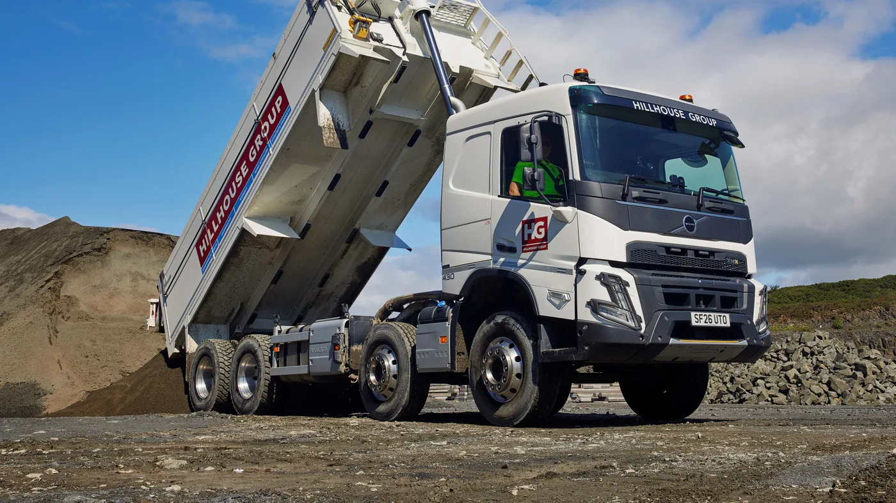

Volvo Trucks informó el 27 de agosto la entrega de 15 FMX rígidos 8x4 a Hillhouse Quarry Group, una empresa escocesa dedicada a canteras, construcción y pavimentación. Las unidades reemplazan camiones de especificación semejante y se incorporan a una flota de 101 vehículos, compuesta en su mayoría por Volvo.
No es una compra pensada para una tarea ocasional. El grupo opera durante las 24 horas y transporta piedra triturada, arena, grava, mezclas para pavimento y material fresado. Los camiones trabajarán al menos cinco días por semana, con turnos nocturnos y fines de semana cuando la demanda lo requiera.
Una especificación que empieza por la carga
Cada unidad lleva una carrocería Thompson aislada. El aislamiento resulta importante cuando se transportan mezclas asfálticas, porque ayuda a conservar la temperatura durante el viaje y evita que el material pierda condiciones antes de llegar a la obra. El piso es de acero Hardox, elegido para resistir abrasión e impactos repetidos.
Hillhouse sustituyó además las llantas de acero por aleaciones pulidas. La reducción de peso propio deja una fracción mayor de la masa total disponible para la carga comercial. En un vehículo que completa numerosos ciclos diarios, cada kilogramo recuperado puede convertirse en más productividad, siempre dentro de los límites legales por eje y conjunto.
La configuración 8x4 reparte el peso entre cuatro ejes y combina capacidad con maniobrabilidad. Sin embargo, no alcanza con contar ejes. La posición de la carrocería, la distribución del material, la distancia entre ejes y la tara real deben analizarse como un sistema.
El FMX como base vocacional
El FMX fue concebido para tareas de construcción y fuera de ruta. En cantera, el chasis convive con polvo, vibraciones, pendientes, arranques frecuentes y superficies irregulares. Las protecciones inferiores, la altura libre y los puntos de remolque son tan importantes como la potencia del motor.
La operación alterna entre terreno agresivo y caminos públicos. Eso exige que la unidad mantenga estabilidad y frenado con carga, pero también confort y visibilidad durante traslados. Hillhouse destacó la respuesta positiva de los conductores y vinculó el confort con la posibilidad de atraer y retener personal.

Disponibilidad durante cinco años
La empresa espera conservar los camiones durante al menos cinco años y contrató cobertura Volvo Gold. Más allá del nombre comercial, el dato muestra que la compra se evaluó junto con el soporte. En una cantera, una unidad detenida puede afectar la alimentación de una planta o la secuencia de una obra.
Para medir la disponibilidad no basta con contar averías. También importan el mantenimiento programado, el tiempo para conseguir repuestos, la capacidad de diagnóstico y la coordinación con el taller. Una flota intensiva necesita intervenciones planificadas en ventanas que no interrumpan los picos de producción.
Puntos críticos de mantenimiento
- Suspensión y bujes: revisar juegos, fijaciones y desgaste causado por carga y terreno.
- Neumáticos: controlar presiones, cortes, piedras retenidas y diferencias de diámetro entre ruedas gemelas.
- Sistema hidráulico: observar mangueras, uniones, cilindro, pernos y pérdidas antes de cada turno.
- Carrocería: buscar fisuras, deformaciones y desgaste del piso, especialmente en las zonas de impacto.
- Frenos: vigilar temperatura, contaminación y desgaste desigual en recorridos con pendientes.
- Admisión y refrigeración: limpiar con la frecuencia que exige el polvo, sin dañar radiadores ni elementos filtrantes.
Qué puede aprender una flota argentina
La entrega ocurre en Escocia y no constituye un lanzamiento para Argentina. Aun así, el criterio es trasladable a canteras, obras viales y movimientos de áridos locales: primero se define el ciclo real y luego se arma el camión. Carga útil, robustez, disponibilidad y ergonomía deben evaluarse juntas.
Antes de comprar conviene registrar distancias, pendientes, material, cantidad de ciclos, tiempo de espera y porcentaje de ruta. Con esos datos es posible comparar una mayor tara con la durabilidad que aporta, o una llanta liviana con su costo y facilidad de reparación.
Medir costo por tonelada, no sólo consumo
En este tipo de trabajo, los litros cada cien kilómetros no describen toda la productividad. Un indicador más representativo combina combustible, carga útil, cantidad de ciclos y toneladas efectivamente entregadas. También debe sumar neumáticos, mantenimiento, horas de ralentí y tiempo perdido en filas o por indisponibilidad.
Una unidad más liviana puede mover más material por viaje, pero ese beneficio sólo existe si la configuración conserva estabilidad y vida útil. Del mismo modo, una protección robusta agrega tara, aunque puede evitar daños costosos. Comparar alternativas exige mirar el costo por tonelada durante varios años, no únicamente el precio de compra.
Seguridad durante la descarga
El momento de elevar la caja merece un procedimiento específico. El terreno debe ser firme y nivelado, el material tiene que desprenderse de forma uniforme y el conductor debe vigilar cables, estructuras y personas. Una carga adherida a un costado desplaza el centro de gravedad y puede volcar el conjunto.
Antes de iniciar cada jornada conviene comprobar bisagras, pernos, cilindro, válvulas y dispositivo de retención. Nadie debe trabajar debajo de una caja elevada sin el apoyo mecánico previsto por el fabricante. Son controles breves que protegen tanto el vehículo como a quienes operan alrededor.
El camión es parte de un sistema
Los 15 FMX no llaman la atención por una única cifra de potencia. La noticia es relevante porque muestra una especificación coherente: chasis vocacional, cuatro ejes, caja aislada, piso resistente, menor tara y respaldo de mantenimiento.
En trabajo pesado, la configuración correcta suele producir más valor que una característica aislada. El objetivo final es transportar más material útil, conservar seguridad y mantener la unidad disponible durante toda su vida planificada.